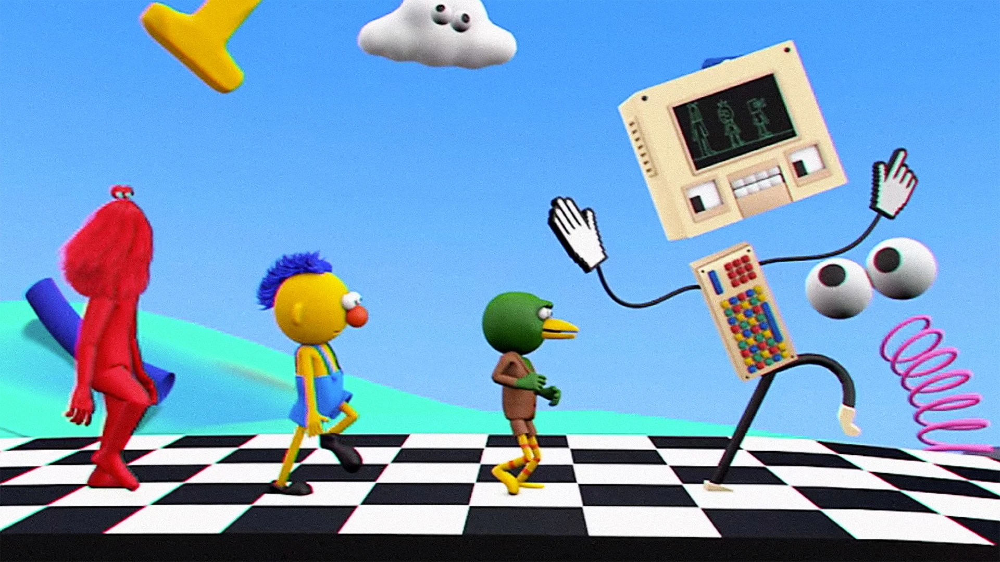
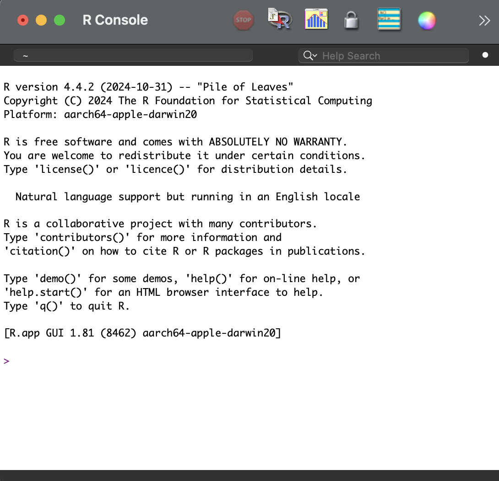
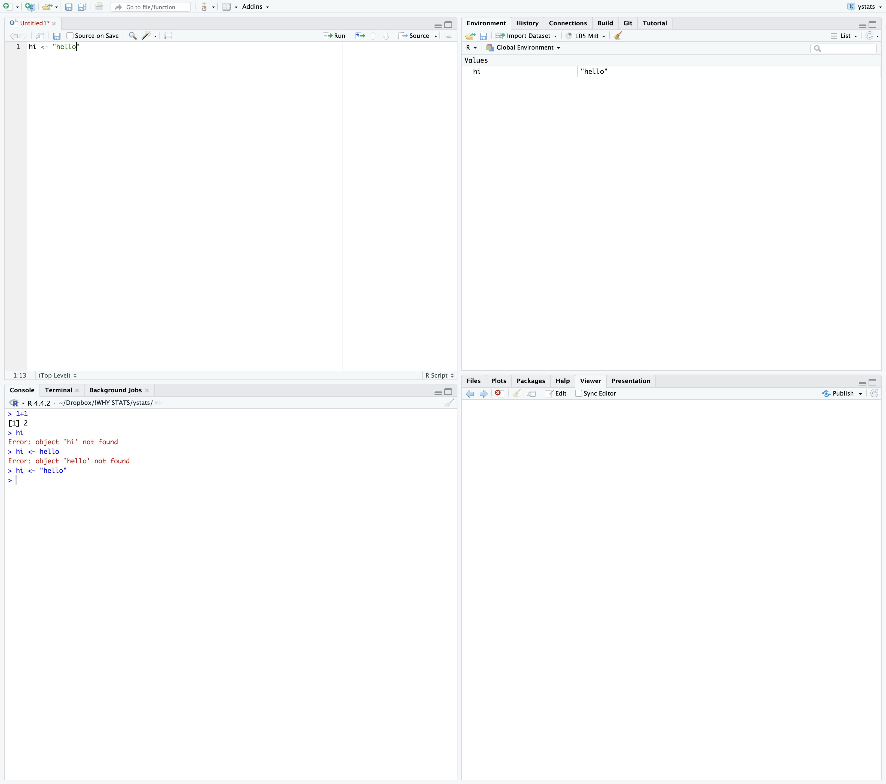
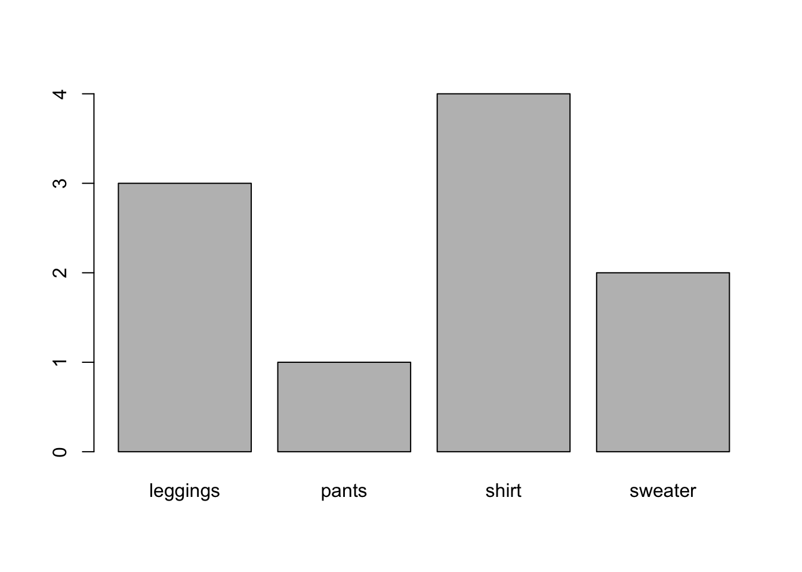
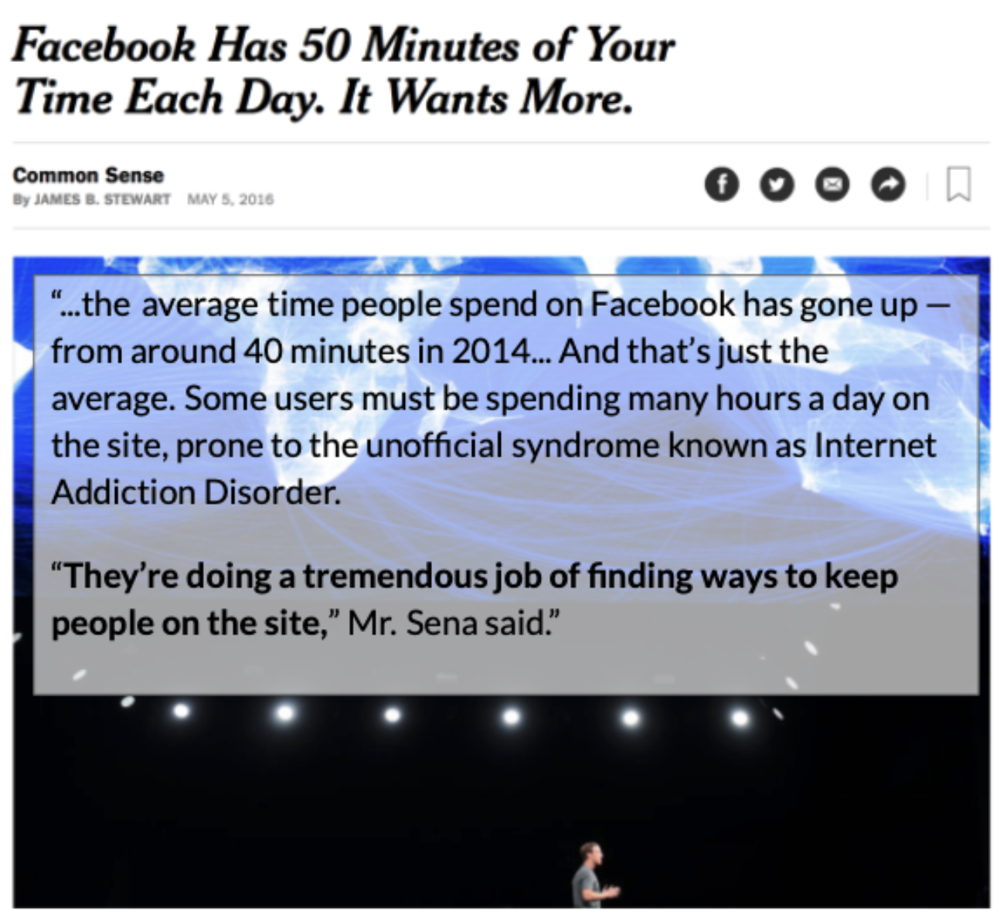
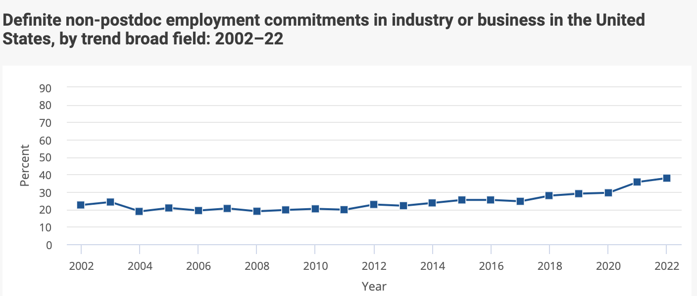

Class 1 | Why Statistics?
Welcome to Psych 101
access these lecture notes here : tinyurl.com/hipsychstats
click on this link to check-in (or visit : tinyurl.com/first101class)

Announcements
- Section Swap : post on bCourses to find someone to swap with.
- Waitlisted Students : Thanks for your patience! Go bears…
- Join the Class Discord : link on bCourses
- Next Week :
- Attend Discussion Section
- Complete Lab 1 (will start in lecture!)
- Read Chapter 2
- Complete Quiz 2
Agenda
- 3:10 - 3:20 : Check-In & Announcements
- 3:20 - 3:30 : RECAP : Variables and Variation
- 3:30 - 4:20 : IN R : Defining Variables
- 4:20 - 4:30 : Break #1
- 4:30 - 5:00 : RECAP : Prediction and Linear Models
- 5:00 - 5:05 : Break #2
- 5:05 - 5:30 : DISCUSSION : Research Questions as Linear Model
- 5:30 - 6:00 : So you’re interested in going to graduate school?
Check-In Results
- professor will paste here.
RECAP : Psychological Life is Variation
Activity : Variables and Variation in the Room
Class Activity. Let’s create a list of variables that we observe in this classroom.
Key Terms. From the readings.
Affect, Behavior, Cognition
Between vs. Within-Person Variation
[7 Minutes] Answer the following questions with your buddy.
Find a buddy in the class! (There’s a discord thread if you prefer to communicate with someone online.)
If you could have dinner with anyone in the world (living or dead) who would it be?
Why are you a psychology major? What interests you about people (or non-human animals)?
How would you label this interest as a variable?
Are you interested in the between-person or within-person version of this variable?
Are you interested in the Affective, Behavioral, or Cognitive aspect of this variable?
Student Examples
IN R : Defining Variables
Thinking about Programming (Free Association Activity)
- Close your eyes
- Take a deep breath (inhale / exhale)
- Visualize an image based on the word that you hear me say.
- What do you observe?
The R Console
The console is where R does its work.
ACTIVITY : Look at the image below. What do you see? What makes sense / what seems confusing?

R Studio and Source Files (.R)
In this class, we’ll be using RStudio. RStudio is an IDE (Integrated Development Environment) that includes the console along with other useful windows and tools.
- The Console is at the bottom left of the IDE. Hi console!
- The R script is at the top left of the IDE, and is a document that you use to write (and organize) code. You will want to do most of your work in the R script, and feel an appropriate level of anxiety when you notice that your Rscript is unsaved (as indicated by the red text and *).
- The Environment is at the top right of the IDE, and shows you all of the “objects” that you have defined in R.
- The File Window is at the bottom right of the IDE, and shows you the files. Note that there are tabs here for Plots (where graphs will pop up), Packages (things you can download to give R extra features), a Help viewer (sometimes very useful!).

ACTIVTY : open up RStudio
- You are Programming! Type some math into an Rscript, and send it to the console. THAT’S RIGHT.
- Work on Lab 1, Question 1 : Define two variables in R : one numeric, and one string. Note : you can use the data that we collected in class, or collect your own data (make sure each variable has at least ten data points). “Print” each variable in R, and paste the output as a screenshot. Then, graph the numeric variable as a “histogram” and the string variable as a “plot”. Below your graph, describe what you observe about the individuals in the dataset for each variable. See the lecture videos in Chapter 2 for a guide on how to do this!
R CODE : Variables and Variation
Numeric Variables in R
| Code | Description |
|---|---|
|
variable = an object that you will define in R <- = “assign”; tells R to save whatever comes on the right to whatever object is on the left. c = combine : tells R to combine whatever happens in the parentheses () = parentheses to group related terms # = what you store in the variable; each item should be separated by a comma and space. |
|
For continuous variables : draws a histogram. |
Example : Creating Numeric Variables
Note : the code below might not run depending on your browser settings. professor will demonstrate this in class using R.
String Variables
|
variable = an object that you will define in R <- = “assign”; tells R to save whatever comes on the right to whatever object is on the left. c = combine : tells R to combine whatever happens in the parentheses () = parentheses to group related terms # = what you store in the variable; each item should be separated by a comma and space. |
|
as.factor() # converts a string variable into a categorical factor |
|
# “saves” this conversion as the original variable |
|
For categorical variables : draws a barplot. For continuous variables : illustrates values of the variable (y-axis) as a function of their index (x-axis). |
Example in R : Creating Non-Numeric Variables
The data below describe the categories of family laundry that was hanging in my apartment to dry. As before, the code below might not run depending on your browser settings. professor will demonstrate this in class using R.
laundryhang <- c("shirt", "shirt", "leggings", "leggings", "shirt",
"shirt", "leggings", "pants", "sweater", "sweater") # defining a string variable
print(laundryhang) [1] "shirt" "shirt" "leggings" "leggings" "shirt" "shirt"
[7] "leggings" "pants" "sweater" "sweater" laundryhang # another way to "print" the variable [1] "shirt" "shirt" "leggings" "leggings" "shirt" "shirt"
[7] "leggings" "pants" "sweater" "sweater" laundryhang <- as.factor(laundryhang) # changing the format of the sting variable into a categorical factor
plot(laundryhang) # a way to graph the non-numeric variable
Break Time: Meet Back at 4:25

Prediction & Power
Predictions in Real Life
- EXAMPLE :
- Knowledge (what information did you use to make the prediction)?
- Power (ways your predictions influence future behaviors)
- Was Professor Valid?
- Work on Lab Question. What’s a prediction about people that you made today? What information did you use to make this prediction? How did (or could) you use this prediction to influence outcomes? Were you valid in your predictions? Finally, write a linear model that defines the prediction (and information that you used) as a formula (e.g., DV ~ IV1 + IV2 + … + error).
- STUDENT EXAMPLE :
- prediction :
- knowledge :
- power :
- valid :
- model :
- STUDENT EXAMPLE :
- prediction :
- knowledge :
- power :
- valid :
- model :
Scientific Predictions
Psychological scientists seek to better understand variation, in order to help make valid predictions in ways that help exert power over our environments.
| Topic | Other Questions We Might Ask? |
|---|---|
| 1 |
The Linear Model

RECAP : Definition and Examples
Steps to Take :
list the variable that you want to predict (the DV)
list the variables that you think will help predict the DV (the IVs)
NOTE : you do not (and can not) account for EVERY variable in your linear model!
IN FACT : researchers are very specific about the variables they will include.
ERROR will capture all the other variables not in your model.
Example : What predicts why people differ in the amount of screen time that they use (between or within-person differences)?
KEY IDEA : Linear Models Help Organize and Quantify Prediction
- organize : a model specifies what information (IV) we think might help us predict the DV
- quantify : when we add statistics to our model (much later!), we will see…
the direction of the prediction : is there a positive or negative relationship between the IV and the DV?
the “weight” of the prediction : how much does each IV help us predict the DV?
what is the “best” predictor in our model?
what is the “worst” predictor in our model?
the amount of error in our prediction : how well does the model as a whole help us predict individual scores? how well does the model generalize to “reality”?
- A Real-Life Linear Model in the Wild :

From Prediction –> Linear Model
student example prediction :
- as a model :
student example prediction :
- as a model :
Work on Lab 1 : Predictions & Research Questions.
On Your Own
Lab 1, Question 2 : What’s a prediction about people that you made today? What information did you use to make this prediction? How did (or could) you use this prediction to influence outcomes? Were you valid in your predictions? Finally, write a linear model that defines the prediction (and information that you used) as a formula (e.g., DV ~ IV1 + IV2 + … + error).
Lab 1, Question 3 : Identify a research question that you might be interested to study as a psychologist (this could be what you wrote about in Lab 1, or something new.) Then, define the DV for this question, and explain what interests you about this question and how this variable might be understood as an example of affect, behavior, and/or cognition. Next, explain what between-person and within-person variation might look like for this variable. Finally, identify some other variables that you think will predict this DV, and write out this question (and your theory) as a linear model.
Lab 1, Quesiton 4 (In Discussion Section). With your discussion section, define each of the six biases described in the Goldacre (2010) reading on cognitive biases, and come up with an example from real-life.
Next Time on Psych 101.
- Take this Exit Survey Now : tinyurl.com/onlinebyeintro
- Attend Discussion Section & Complete Lab 1
- Read Chapter 2 & take Quiz 2
So You Think You Want to Be a Researcher?
Getting Research Experience as an RA
RA = Research Assistant
Mostly Unpaid Experiences
Some paid experiences exist!
From the berkeley website…
Stanford [maybe paid]
“Cold calling” labs who are doing work you think is cool.
Chat with your TAs / Professors
As an RA :
work with data : transcribing data; behavioral coding data; recruiting and participants to collect data; setting up psychophysiological recordings; cleaning data; etc.
other opportunities to gain skills you can demonstrate :
reading & discussing papers
working with IRB (institutional review board - an ethics thing)
analyzing data → presenting research at a conference (poster) or submitting a paper for publication [your golden ticket]
general mentorship (how to apply to grad school; where to apply; who to talk to & e-mail; etc.)
NOTE : this work and these skills apply to other work outside of research applications [time management; coordinating schedules; juggling responsibilities; etc.]
get a sense of whether this [work or lab] is for you?
do you enjoy the work? are you going to look forward to showing up and doing the work / fulfilling the commitment?
are you working with a horrible monster?
not responsive
inconsistent work / no plan for your work
kind of a bully (emotionally abusive → stealing your work)
or are you working with someone who is super cool and a positive influence on mentoring young minds!?!?! [YES!!!!]
Applying to Graduate School
You are applying to work on research with a specific professor(s) at a school.
Should have a sense of the topic you want to pursue.
Good to have a narrative about how your past work and studies have prepared you for this topic / demonstrate an enduring interest in the topic.
Independent Thesis / Research Project :
an official honors’ thesis
undergraduate research project (e.g., SURF; Psych 101!)
your own independent study / advanced work you did as an RA
Personal Statement : Experiences with Research You Can Write About
I’m fascinated by people…Over the last year, I worked on an independent research study to better understand….Working as an RA; your research project; attending / presenting at a conference; etc.
3-4 Letters of Recommendation : folks who can speak personally to your ability to do research.
Clinical Students : some kind of clinical internship / experience üòü
Talk to people who are doing the thing you want to be doing about their journey
The Academic Job Market
Some Data [Source]
| PhDs get jobs? | |
| but not in academia… | |
| $$$$$$$$ |  |
Footnotes
Here’s a link to the article where this headline comes from. These data are a little dated, and I couldn’t immediately find more recent data - my guess is Meta does not really want to advertise that people are using the product more and more. However, in reports to investors reports consistent growth in metrics like “ad impressions” and “daily active users”. Let me know if you find other sources to show how technology companies are capturing more and more of our attention!↩︎